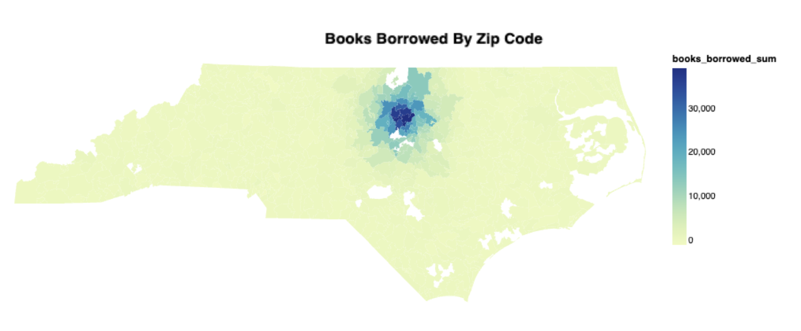

Specifying error metrics#
Note
This tutorial uses features that are only available on a paid version of Tumult Analytics. If you would like to hear more, please contact us at info@tmlt.io.
In the previous tutorial, we wrote a SessionProgram that calculated the total number of books borrowed by library members, sliced by ZIP code. We then wrapped this in a SessionProgramTuner and showed how to evaluate its error report using a single built-in error metric, MedianRelativeError. In this tutorial we are going to build on this example, so let’s re-create it below:
As usual, we first import our packages…
from pyspark import SparkFiles
from pyspark.sql import DataFrame, SparkSession
from pyspark.sql.functions import col
import pyspark.sql.functions as sf
from tmlt.analytics import (
AddOneRow,
KeySet,
PureDPBudget,
QueryBuilder,
Session,
SessionProgram,
)
from tmlt.tune import SessionProgramTuner, Tunable
… and download the datasets, in case we haven’t already done so.
spark = SparkSession.builder.getOrCreate()
spark.sparkContext.addFile(
"https://tumult-public.s3.amazonaws.com/demos/library/v2/members.csv"
)
members_df = spark.read.csv(
SparkFiles.get("members.csv"), header=True, inferSchema=True
)
# ZIP code data is based on https://worldpopulationreview.com/zips/north-carolina
spark.sparkContext.addFile(
"https://tumult-public.s3.amazonaws.com/nc-zip-codes.csv"
)
nc_zip_codes_df = spark.read.csv(
SparkFiles.get("nc-zip-codes.csv"), header=True, inferSchema=True
)
# Similar preprocessing as in the simple transformations tutorial
nc_zip_codes_df = nc_zip_codes_df.withColumnRenamed("Zip Code", "zip_code")
nc_zip_codes_df = nc_zip_codes_df.withColumn("zip_code", nc_zip_codes_df.zip_code.cast('string'))
nc_zip_codes_df = nc_zip_codes_df.fillna(0)
nc_zip_codes_df = nc_zip_codes_df.select("zip_code")
Then we write our program as a SessionProgram.
Note
The following code is identical to the previous tutorial. If you already have it in your environment, feel free to skip to the next section.
class BooksByZipCodeProgram(SessionProgram):
class ProtectedInputs:
members: DataFrame
class UnprotectedInputs:
nc_zip_codes: DataFrame
class Outputs:
books_by_zip_code: DataFrame
def session_interaction(self, session):
nc_zip_codes_df = self.unprotected_inputs["nc_zip_codes"]
nc_zip_keys = KeySet.from_dataframe(nc_zip_codes_df)
query = (
QueryBuilder("members")
.groupby(nc_zip_keys)
.sum("books_borrowed", low=0, high=500)
)
budget = session.remaining_privacy_budget
return {"books_by_zip_code": session.evaluate(query, budget)}
Next, we create our tuner by subclassing SessionProgramTuner and defining the error metric we want to compute.
from tmlt.tune import MedianRelativeError
class SimpleTuner(SessionProgramTuner, program=BooksByZipCodeProgram):
metrics = [
MedianRelativeError(
output="books_by_zip_code",
measure_column="books_borrowed_sum",
join_columns=["zip_code"],
),
]
And finally, we can instantiate this tuner and generate an error report.
simple_tuner = (
SimpleTuner.Builder()
.with_private_dataframe(
source_id="members",
dataframe=members_df,
protected_change=AddOneRow()
)
.with_public_dataframe(
source_id="nc_zip_codes",
dataframe=nc_zip_codes_df,
)
.with_privacy_budget(PureDPBudget(3))
.build()
)
error_report = simple_tuner.error_report()
error_report.show()
Error report ran with budget PureDPBudget(epsilon=3) and no parameters.
Metric results:
+---------+---------+------------+--------------------------------------------------------------------------------+
| Value | Metric | Baseline | Description |
+=========+=========+============+================================================================================+
| 0.18 | mre | default | Median relative error for column books_borrowed_sum of table books_by_zip_code |
+---------+---------+------------+--------------------------------------------------------------------------------+
Generating an error report from a single built-in metric is useful, although somewhat limited in scope. How else can we measure the error of a Tumult Analytics program? In this tutorial, we’ll cover the other built-in metrics provided by Tumult Analytics, and show how to generate error reports using custom metrics that you write yourself.
Exploring built-in metrics#
Tumult Analytics provides other built-in metrics that we can use to measure the error of our program. You can find a full list in the API reference.
Let’s add three more metrics QuantileRelativeError, SpuriousRate and SuppressionRate to our metrics list from earlier.
from tmlt.tune import QuantileRelativeError, SpuriousRate, SuppressionRate
class SimpleTuner(SessionProgramTuner, program=BooksByZipCodeProgram):
metrics = [
MedianRelativeError(
output="books_by_zip_code",
measure_column="books_borrowed_sum",
join_columns=["zip_code"],
),
QuantileRelativeError(
output="books_by_zip_code",
measure_column="books_borrowed_sum",
quantile=0.9,
join_columns=["zip_code"],
),
SpuriousRate(
output="books_by_zip_code",
join_columns=["zip_code"],
),
SuppressionRate(
output="books_by_zip_code",
join_columns=["zip_code"],
),
]
All four metrics compare the differentially private outputs to a baseline, generated automatically, which is the result of a non-DP version of our program. The baseline contains the “true” (non-noisy) query result(s) that our DP program aims to approximate.
The median relative error measures the “typical” error of differentially private aggregations, expressed as a proportion of the baseline value. We measure the relative error of each row (|noisy - baseline| / baseline), and then take the median.
The quantile relative error is a generalization of the median relative error which we will use to measure the error at the 90th percentile of the noisy aggregates.
The spurious rate is the fraction of the group-by keys (here, the ZIP codes) in the output that do not appear in the baseline. This can happen if the
tmlt.analytics.keyset.KeySetcontains groups that do not appear in the actual data.Conversely, the suppression rate is the fraction of group-by keys that appear in the baseline, but do not appear in the differentially private output(s). This can happen if the true data contains groups that do do not appear in the
tmlt.analytics.keyset.KeySet.
tmlt.analytics.metrics gives more detail about how those metrics are computed.
Let’s run this tuner again, with the same initialization as earlier.
simple_tuner = (
SimpleTuner.Builder()
.with_private_dataframe(
source_id="members",
dataframe=members_df,
protected_change=AddOneRow()
)
.with_public_dataframe(
source_id="nc_zip_codes",
dataframe=nc_zip_codes_df,
)
.with_privacy_budget(PureDPBudget(3))
.build()
)
error_report = simple_tuner.error_report()
error_report.show()
Error report ran with budget PureDPBudget(epsilon=3) and no parameters.
Metric results:
+-----------+------------------+------------+--------------------------------------------------------------------------------------+
| Value | Metric | Baseline | Description |
+===========+==================+============+======================================================================================+
| 0.168 | mre | default | Median relative error for column books_borrowed_sum of table books_by_zip_code |
+-----------+------------------+------------+--------------------------------------------------------------------------------------+
| 6.152 | qre(q=0.9) | default | 0.9-quantile relative error for column books_borrowed_sum of table books_by_zip_code |
+-----------+------------------+------------+--------------------------------------------------------------------------------------+
| 0.608479 | spurious_rate | default | Fraction of spurious rows in table books_by_zip_code |
+-----------+------------------+------------+--------------------------------------------------------------------------------------+
| 0.0031746 | suppression_rate | default | Fraction of suppressed rows in table books_by_zip_code |
+-----------+------------------+------------+--------------------------------------------------------------------------------------+
As expected, the 90th percentile relative error is larger than the median relative error.
We can also see that the spurious rate is quite high at 53%. More than half the ZIP
codes present in the output do not have any library members in the real dataset; these
published counts are “spurious”. To mitigate this effect, we could either suppress ZIP
codes with small noisy counts from the output as post-processing, or use a KeySet that
includes fewer ZIP codes (for example, only those that are close enough to our fictional
library). In this tutorial, we will assume we want to publish data for all ZIP codes in
North Carolina, so we will leave the KeySet as-is. However, we can modify session_interaction() method
to the suppress the ZIP codes with relatively small counts.
def session_interaction(self, session):
# ... same as before
return {
"books_by_zip_code": (
session.evaluate(query, budget)
.filter(col("books_borrowed_sum") > 500)
)
}
If we run the previous steps with this modification and generate the error report, we can see that the spurious rate has decreased substantially. The suppression rate and relative error have also increased somewhat, but are still comfortably small:
error_report = simple_tuner.error_report()
error_report.show()
Error report ran with budget PureDPBudget(epsilon=3) and no parameters.
Metric results:
+-----------+------------------+------------+--------------------------------------------------------------------------------------+
| Value | Metric | Baseline | Description |
+===========+==================+============+======================================================================================+
| 0.049 | mre | default | Median relative error for column books_borrowed_sum of table books_by_zip_code |
+-----------+------------------+------------+--------------------------------------------------------------------------------------+
| 0.276 | qre(q=0.9) | default | 0.9-quantile relative error for column books_borrowed_sum of table books_by_zip_code |
+-----------+------------------+------------+--------------------------------------------------------------------------------------+
| 0.172973 | spurious_rate | default | Fraction of spurious rows in table books_by_zip_code |
+-----------+------------------+------------+--------------------------------------------------------------------------------------+
| 0.0316456 | suppression_rate | default | Fraction of suppressed rows in table books_by_zip_code |
+-----------+------------------+------------+--------------------------------------------------------------------------------------+
By plotting the distribution of books borrowed by ZIP code, we can see that the activity is concentrated around the location of the library.

Using custom metrics#
What if we need to measure our program’s error in a way that cannot be described using built-in metrics? Say that we want to compare the total number of books published by our program to the true value. We can do this by defining a fully custom metric using the @joined_output_metric decorator and defining a method that computes our metric.
The custom metric method takes a DataFrame which contains the DP data joined to the baseline data, and should return either a single value (if there are no grouping columns), or (if grouped) a DataFrame that has a column named with the result_column_name variable that contains the metric’s result values.
from tmlt.tune import joined_output_metric
class SimpleTuner(SessionProgramTuner, program=BooksByZipCodeProgram):
@joined_output_metric(
name="relative_change_total_books_borrowed",
description="Relative change in the total number of books borrowed",
output="books_by_zip_code",
join_columns=["zip_code"],
indicator_column_name="indicator",
join_how="outer",
)
@staticmethod
def total_borrowed_books(joined_output, result_column_name):
relative_change = joined_output.agg(
(sf.sum("books_borrowed_sum_dp") / sf.sum("books_borrowed_sum_baseline") - 1)
.alias(result_column_name))
return relative_change.head(1)[0][result_column_name]
metrics = [
MedianRelativeError(
output="books_by_zip_code",
measure_column="books_borrowed_sum",
join_columns=["zip_code"],
),
QuantileRelativeError(
output="books_by_zip_code",
measure_column="books_borrowed_sum",
quantile=0.9,
join_columns=["zip_code"],
),
SpuriousRate(
output="books_by_zip_code",
join_columns=["zip_code"],
),
SuppressionRate(
output="books_by_zip_code",
join_columns=["zip_code"],
),
]
When we now run our error report on this tuner, we can see our new metric:
simple_tuner = (
SimpleTuner.Builder()
.with_private_dataframe(
source_id="members",
dataframe=members_df,
protected_change=AddOneRow()
)
.with_public_dataframe(
source_id="nc_zip_codes",
dataframe=nc_zip_codes_df,
)
.with_privacy_budget(PureDPBudget(3))
.build()
)
error_report = simple_tuner.error_report()
error_report.show()
Error report ran with budget PureDPBudget(epsilon=3) and no parameters.
Metric results:
+------------+--------------------------------------+------------+--------------------------------------------------------------------------------------+
| Value | Metric | Baseline | Description |
+============+======================================+============+======================================================================================+
| 0.047 | mre | default | Median relative error for column books_borrowed_sum of table books_by_zip_code |
+------------+--------------------------------------+------------+--------------------------------------------------------------------------------------+
| 0.211 | qre(q=0.9) | default | 0.9-quantile relative error for column books_borrowed_sum of table books_by_zip_code |
+------------+--------------------------------------+------------+--------------------------------------------------------------------------------------+
| 0.142045 | spurious_rate | default | Fraction of spurious rows in table books_by_zip_code |
+------------+--------------------------------------+------------+--------------------------------------------------------------------------------------+
| 0.0443038 | suppression_rate | default | Fraction of suppressed rows in table books_by_zip_code |
+------------+--------------------------------------+------------+--------------------------------------------------------------------------------------+
| -0.0571484 | relative_change_total_books_borrowed | default | Relative change in the total number of books borrowed |
+------------+--------------------------------------+------------+--------------------------------------------------------------------------------------+
If your metric doesn’t need to join the DP and baseline outputs, you can use the @single_output_metric decorator or @metric decorator decorators instead. These decorators do less work for you, and offer a less-processed view into the program’s outputs.
A note about baselines#
Throughout this tutorial, we mentioned that error metrics are often computed by comparing the data generated by the SessionProgram to a baseline. But we never explicitly specified what the ground truth was for our data release. What is this automatic baseline and how is it computed? There are two possibilities.
By default, Tumult Analytics computes a baseline by running the same queries as in the
SessionProgram, without any of the mechanisms that are necessary to obtain differential privacy. For example, no clamping nor truncation is performed, group-by queries ignore their KeySet argument, and no noise is added to the results.It is also possible to configure how the baseline is computed by passing baseline options to the
SessionProgramTuner, and/or by defining a fully custom baseline using the@baselinedecorator as demonstrated in thetunerexample. To use the “default” baseline in addition to these custom baselines, you need to specify"default": NoPrivacySession.Options()in thebaseline_optionsdictionary.